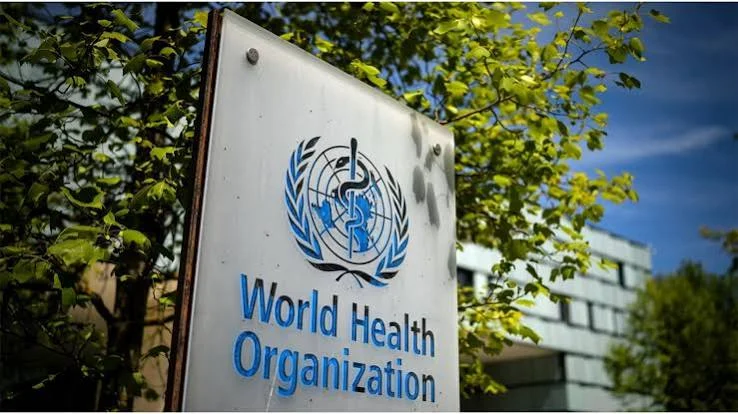

Security & Crime · 04 Nov 2026
Climate, health actions could save 1.6 million lives yearly — WHO

The World Health Organisation says implementing key climate and health measures could save 1.6 million lives a year and generate trillions in economic bene Read More: https://punchng.com/climate-health-actions-could-save-1-6-million-lives-yearly-who/
Multiple independent publishers are reporting on the same development: Climate, health actions could save 1.6 million lives yearly — WHO.
The available reports place the development in the Security & Crime category. The accounts were compared for agreement on the central event rather than simply shared names or broad topics.
One of the available reports describes the development this way: The World Health Organisation says implementing key climate and health measures could save 1.6 million lives a year and generate trillions in economic bene Read More: https://punchng.com/climate-health-actions-could-save-1-6-million-lives-yearly-who/
Readers should consult the linked source reports for additional context, updates and details that may change as the story develops.
Sources
This article was produced by the C. O. Eric AI Newsroom from the cited sources. It is published only after automated evidence and safety checks.